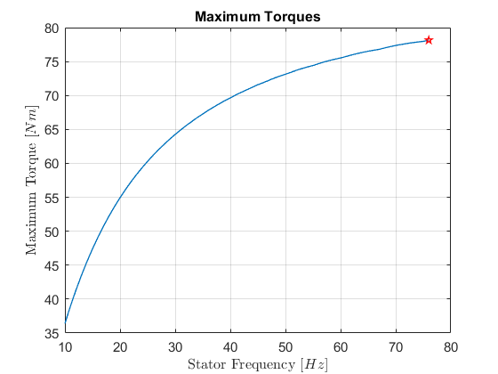

Vienna Car part2
In this part of the Vienna Car project, the behavior of the induction motor will be simulated.
Contents
open_system('induction_motor');

Induction Motor Model Characteristics
From the motor characteristic constants given in the project script, one can calculate the impedances, currents and voltages of the circuit.
open_system('induction_motor/Induction Motor');
From the KCL one can obtain that:
The stator current is given by the stator voltage divided by the equivalent impedance of the circuit:
The rotor current is given by:
Applying the KVL to the left circuit loop, one can obtain  as:
as:
Knowing now the rotor current, now it is possible to find the mechanical power output of the machine:
Notice that the power output of the machine is three times the power otuput of each phase.
Finally, the torque is given by the racio between the mechanical power and the rotor's angular velocity:
So, from the simulink model of the induction motor, one can see the lines of torque for different stator voltage and frequencies, being V/f = 1:
clear
clc
close all
In order to understand the behavior of the torque for several V/f = 1 values, a simulation of the induction motor will be made with the following inputs.
frequency_stator_vector = 10:1:76; stator_voltage_vector = 10:1:76;
The resulted response is as follows:
figure(); % Maximum torques max_torque_values = []; % Initial torque init_torque_values = []; for i = 1:length(frequency_stator_vector) frequency_stator = frequency_stator_vector(i); stator_voltage = stator_voltage_vector(i); induction_motor_simulation = sim('induction_motor'); max_torque_values = [max_torque_values max(induction_motor_simulation.torque)]; % Save for later init_torque_values = [init_torque_values induction_motor_simulation.torque(1)]; % Save for later if (frequency_stator_vector(i) == 10 || frequency_stator_vector(i) == 30 || frequency_stator_vector(i) == 50 || frequency_stator_vector(i) == 60 || frequency_stator_vector(i) == 76 ) plot(induction_motor_simulation.rotor_angular_velocity , induction_motor_simulation.torque, 'LineWidth', 1); hold all set( gca, 'FontSize', 11); grid on; title('Torque Curve'); xlabel('Rotor Angular Velocity $[rpm]$','Interpreter', 'latex'); ylabel('Torque [$Nm$]','Interpreter', 'latex'); end end legend('frequency = 10 [Hz]', 'frequency = 30 [Hz]', 'frequency = 50 [Hz]', 'frequency = 60 [Hz]', 'frequency = 76 [Hz]');
TODO: Interpretation
Initial and Maximun Torque
Now, it is interesting to study what are the V/f = 1 values that possess the highest initial and maximum torque, in order to discover what are the best operation conditions for the induction motor. To do that, one must only sweep through the various values of V/f = 1 , and then plot the values initial and maximum torque.
With the values calculated computed before, one can plot the follow behavior:
[max_init_torque, frequency] = max(init_torque_values); figure() plot(frequency_stator_vector, init_torque_values, frequency_stator_vector(frequency),init_torque_values(frequency),'pr', 'LineWidth', 1); set( gca, 'FontSize', 11); grid on; title('Initial Torques'); xlabel('Stator Frequency $[Hz]$','Interpreter', 'latex'); ylabel('Initial Torque [$Nm$]','Interpreter', 'latex'); max_initual_torque_value = sprintf('The maximum initial torque is qiven by: frequency = %d [Hz] , Initial Torque = %d [Nm]', frequency_stator_vector(frequency), init_torque_values(frequency));

Obtaining the following result:
display(max_initual_torque_value);
max_initual_torque_value =
'The maximum initial torque is qiven by: frequency = 23 [Hz] , Initial Torque = 4.967301e+01 [Nm]'
The same approach can be taken for the Maximum torque:
[max_torque, frequency] = max(max_torque_values); figure() plot(frequency_stator_vector, max_torque_values, frequency_stator_vector(frequency),max_torque_values(frequency),'pr', 'LineWidth', 1); set( gca, 'FontSize', 11); grid on; title('Maximum Torques'); xlabel('Stator Frequency $[Hz]$','Interpreter', 'latex'); ylabel('Maximum Torque [$Nm$]','Interpreter', 'latex'); max_torque_value = sprintf('The maximum torque is qiven by: frequency = %d [Hz] , Initial Torque = %d [Nm]', frequency_stator_vector(frequency), max_torque_values(frequency));
Obtaining the following result:
display(max_torque_value);
max_torque_value =
'The maximum torque is qiven by: frequency = 76 [Hz] , Initial Torque = 7.815393e+01 [Nm]'
TODO: Intepret
TASK 3
clc
load('../vienna_car_part1/sim_part1');
test = sim('vienna_car_part2');